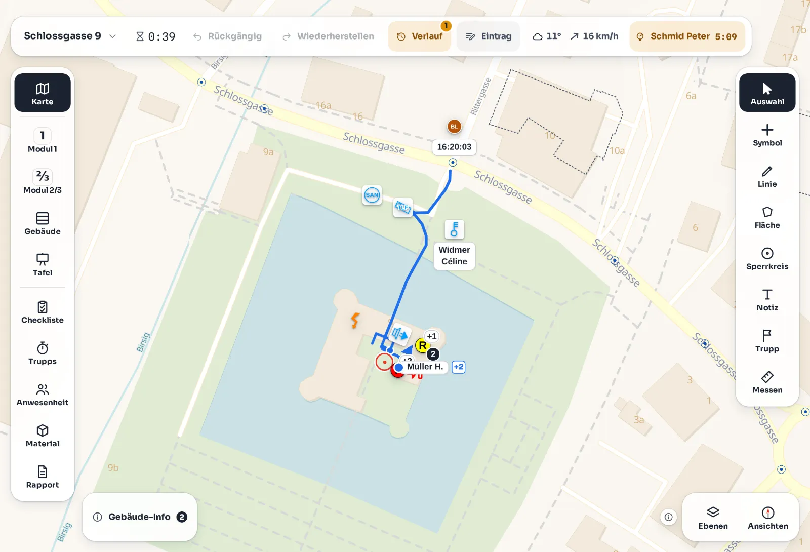

Open source · gratuit · Svizra
Direcziun digitala d’acziun per ils pumpiers.
KP Front è il post da commando digital al lieu d’acziun: charta, plans, gruppas, decurs e rapport en ina applicaziun – sin tablet, laptop e telefonin.
Senza login – en la demo arda gist insatge a Musterdorf


Sviluppà or dal manaschi real d’acziun dals pumpiers d’Oberwil BL – là testà e sviluppà vinavant cuntinuadamain.
La mesira
«Utilisabel a las 3 la notg – suenter sis mais senza exercizi»
En in corps da pumpiers da milissa na sesa nagin mintga di davant l’apparat. Perquai sto l’applicaziun esser construida uschia ch’ins la po duvrar endretg era mez durment: tut l’impurtant è visibel directamain, predefiniziuns raschunaivlas empè da bleras configuraziuns, e mintga acziun po vegnir revocada.
Ils screenshots èn per tudestg, perquai che la versiun demo da KP Front è per tudestg. Els derivan da la medema instanza; maletgs inscenads fissan mo ina pretensiun.
Charta da situaziun sin palpiri
Maletg da la situaziun sin mintga apparat.
Segns tactics tenor las convenziuns FKS, secturs, lingias da stizzar e notizias sin chartas da swisstopo. Idrants, conducts e posiziuns dals vehichels èn disponibels sco ulteriurs nivels. L’alarm da Divera u FireHub surpigliais vus cun in tip.
- Segns tactics tenor FKS – cun plaun, extensiun e notizias
- Transport d’aua: pressiun lung la lingia e posiziun da las pumpas
- Infurmaziuns davart l’edifizi e mesiras immediatas per l’object
Tavla da protecziun respiratorica e cronometra
Surveglianza che avertescha automaticamain.
Pressiun, temp da retratga e temp dapi l’ultim contact vegnan registrads per mintga gruppa. L’applicaziun avertescha avant che la situaziun daventia critica – er sch’i na guarda nagin gist sin l’ura. Sin il telefonin sco sin il tablet.
- Temp dapi il contact e temp da retratga per mintga gruppa
- Urgenza da protecziun respiratorica immediatamain survart, sin tut ils apparats
- Gruppas cun u senza protecziun respiratorica, cun lur incumbensa
Plan d’object en l’ordinatur
Plan per dissegnar directamain.
Avrir il plan d’acziun, dissegnar sin quel, plazzar gruppas e mesirar tenor scala – cun ils medems instruments sco sin la charta. La pigna da plauns mussa tge gruppa che lavura sin tge plaun.
- Plans d’object e d’acziun da voss corps da pumpiers
- Georeferenzià: tge che stat sin la charta, stat er sin il plan
- Pigna da plauns cun las gruppas per plaun
Fegls da notizias e memoria
Decurs che vegn manà cuntinuadamain.
Scriver u discurrer. Il decurs vegn mo cumplettà e mai surscrit – correcturas vegnan fatgas cun novas endataziuns. Pendenzas avertas As fan endament sezzas.
- Notizias vocalas – cun in servetsch da transcripziun er sco text
- Pendenzas cun promemoria
- Fegl da registraziun per code QR per tuts che contribueschan
Rapport il di suenter
Rapport al return.
Situaziun, persunal, material e decurs vegnan integrads directamain en il rapport: controllar, cumplettar, stampar sco PDF. Per la discussiun finala reproducescha il viadi en il temp l’entira notg.
- Rapport d’acziun sco PDF finì
- La controlla finala mussa tge che manca anc
- Viadi en il temp: l’acziun minuta per minuta
Manaschi
Vossas datas restan tar vus.
KP Front è open source. Mintga corps da pumpiers maina sia atgna installaziun – i na dat nagin server central, e nagut na vegn tramess automaticamain a nus.
Gratuit
AGPL-3.0: naginas taxas da licenza, nagin abunament, nagins custs per apparat. I restan voss atgns custs per il manaschi e l’infrastructura.
Tar vus
Sin in mini-PC en il magazin, sin in agen server u tar in purschider da cloud da vossa tscherna. Funcziuna offline sco applicaziun installabla.
Senza dependenza
L’entir code è avert: manar, adattar e sviluppar vinavant sezs.
Fatg per vus
Voss persunal, vehichels, plans, glistas da controlla e nivels da charta endrizzais vus en voss agen champ d’administraziun – senza programmar.
Volumen da funcziuns
Tge che fa part.
Il volumen da funcziuns è creschì en acziuns ed exercizis reals e betg sin basa d’ina glista da funcziuns. Tut quai che vegn da servetschs externs – alarmaziun, GPS, annunzia cun Microsoft – è opziunal: KP Front funcziuna cumplettamain era senza questas colliaziuns.
Charta & planSegns tactics · transport d’aua · rauba privlusa · infurmaziuns da l’edifizi · mesiraziuns da gas
- Segns tactics tenor las convenziuns FKS, cun attributs e designaziuns
- Secturs, zonas serradas, surfatschas e dissegn liber
- Lingias da stizzar cun annotaziuns FKS, mintga lingia è attribuida ad ina gruppa
- Mesirar distanzas e surfatschas, era sin plans tenor scala
- Transport d’aua: squitsch lung ina lingia da stizzar tenor il profil d’autezza, il diameter da la lingia e la quantitad d’aua – il quint plazza sez las pumpas e po las metter directamain sin la charta
- Nivels: idrants, cataster da conducts, servetschs chantunals da chartas
- Register da materias privlusas: nums ONU, infurmaziuns davart substanzas e recumandaziuns per distanzas da bloccada e da protecziun, disponibel directamain durant l’acziun
- Infurmaziuns meteorologicas e da vent per sustegnair la valitaziun da la situaziun, ed il radar da precipitaziuns da MeteoSvizra sco nivel
- Plans d’object sco tavla da lavur e plauns superposts
- Charta & objects: senza acziun la charta da l’agen corp – consultar objects, privels, idrants e plans d’object
- Tavla cun paginas FKS: skizza libra, «Erste Führung» e fegls dal manual FKS – stampads en il rapport sco l’original
- Infurmaziuns davart l’edifizi: datas dal register d’edifizis – gas, ieli da stgaudar, PV – e mesiras immediatas per l’object
- Mesiraziuns: puncts da mesiraziun cun valurs da gas per local e per plaun, cun decurs e stgalims d’alarm
- Georeferenziaziun: colliar plan e charta sur puncts da referenza cuminaivels – in object, visibel sin omaduas surfatschas, cun indicaziun da la precisiun. Il corps da pumpiers po orientar e deliberar ils plans d’object ordavant
- Revocar e restabilir sin mintga surfatscha – process documentads restan chapibels
Persunal & medsSurveglianza da protecziun respiratorica · preschientscha · plan da temp · cundivider la posiziun · material
- Surveglianza da la protecziun respiratorica: pressiun, temp da retratga, ura da contact, alarms
- Urgenza da protecziun respiratorica: ina gruppa en privel cumpara immediatamain cotschna sisum sin tut ils apparats – cun ura d’urgenza e gruppa da segirezza
- Gruppas cun u senza protecziun respiratorica: persunal, incumbensa e persuna da direcziun – sin charta, plan e plauns cun l’atgna colur da la gruppa, dapertut la medema
- Preschientscha cun uras d’arriv e grads
- Sin via: tgi che ha confermà l’alarm da Divera, directamain sur la preschientscha
- Plan da temp: planisar disponibilitads e servetschs per mintga persuna, vesair la cuvrida durant l’entira acziun ed edir in formular da direcziun
- Cundivider la posiziun: tgi che avra il link cumpara sco punct sin la charta da situaziun – voluntarmain, e mo per questa acziun
- Dar vinavant l’access ad in’acziun cun in link; l’access è visibel e po vegnir revocà
- Modus da preschentaziun: tgi che ha averta l’acziun suonda il visur da la persuna che preschenta – tuts pon mussar, nagut vegn memorisà
- Material cun inventari e consum
- Glistas da controlla adattablas cun access direct als instruments correspundents
- Rolla da direcziun d’acziun: administrar preschientscha, meds, glistas da controlla e rapport – leger charta e gruppas senza dretg da modifitgar
DocumentaziunDecurs · viadi en il temp · rapport sco PDF · stampader dal magazin
- Il decurs vegn mo cumplettà e mai surscrit
- Endataziuns cun text, audio, fotografias e memoraziuns; cun in servetsch da transcripziun configurà vegnan notizias vocalas transfurmadas en text
- Viadi en il temp: reproducziun da l’acziun minuta per minuta, temps d’attesa lungs vegnan sursiglids – per la discussiun finala
- Rapport d’acziun sco PDF cun persunal, material, temps, decurs, skizza, fotografias e surveglianza respiratorica
- Stampar rapport ed urari directamain sin il stampader dal magazin opziunal
- Evaluaziun per la discussiun finala: cifras clav ed ina lingia dal temp sin in agen fegl a la fin dal rapport
- Fotografias sco annexas al rapport
- Controlla finala che mussa indicaziuns mancantas
- Organisaziuns partenarias cun remartgas
- Fegl da registraziun via code QR per tut las persunas che contribueschan infurmaziuns
- Temps d’alarm e d’acziun tenor il decurs real
ManaschiOffline · plirs apparats · rollas · alarmaziun · annunzia cun Microsoft
- Utilisabel offline sco applicaziun installabla – ina controlla da prontezza mussa avant l’acziun sche las datas necessarias èn memorisadas sin l’apparat
- Plirs apparats lavuran cun il medem stadi – modificaziuns registradas durant in’interrupziun vegnan sincronisadas uschespert ch’ina connexiun è puspè disponibla
- Trais rollas: il sustegn da direcziun modifitgescha tut, il manader d’acziun maina la documentaziun e legia la situaziun, observaders legian mo
- Modus da di e da notg, grondezza dals simbols e surfatschas grondas per tablets
- Surpigliar alarms da Divera u FireHub ed integrar ulteriurs sistems d’alarmaziun sur ina interfatscha averta opziunal
- Posiziuns GPS dals vehichels opziunal
- S’annunziar cun Microsoft en il conto existent, ultra il PIN opziunal
- Visitas d’objects senza acziun, offline – glista da controlla, fotografias e rapport opziunal
- Atgna administraziun per mintga corps da pumpiers: persunal, vehichels, glistas da controlla, nivels da charta e models
Dumondas & respostas
Dumondas frequentas.
Pertge midar?
Tuts vesan il medem maletg a medem temp. Nagina annunzia va a perder. La surveglianza avertescha automaticamain, il traffic da radio diminuescha ed il rapport è quasi terminà al return.
Per tge corps da pumpiers e tge intervenziuns è KP Front fatg?
Per corps da pumpiers da milissa, locals, da basa, professiunals e d’interpresa – tar incendis, accidents da traffic, agid tecnic, defensiun chemica e cunter ieli ed eveniments gronds. KP Front è naschì en il manaschi d’intervenziun d’in corps da pumpiers da milissa; perquai è el fatg per persunas che n’al dovran betg mintga di.
Nua vegnan las datas d’acziun sensiblas memorisadas?
Mintga corps da pumpiers maina KP Front sez (self-hosted). Las datas d’acziun – charta da situaziun, surveglianza da la protecziun respiratorica, decurs e plans dals edifizis – restan sin l’atgna installaziun e sin ils agens apparats: per exempel sin in mini-PC en il magazin, sin in agen server u tar in purschider da cloud tschernì dal corps. I na dat nagin server central, e nagut na vegn tramess automaticamain ad in purschider u a nus. Ils servetschs da chartas, d’adressas e dal temp (tranter auter swisstopo sco standard) survegnan mo la posiziun dumandada; ulteriurs servetschs externs funcziunan mo, sch’il corps als installescha sez.
En tge sa distingua KP Front da sistems commerzials?
KP Front è open source (AGPL-3.0): naginas taxas da licenza, nagin abunament, nagins custs per apparat. Mintga corps maina si’atgna installaziun e mantegna uschia la controlla da sias datas. Restan ils agens custs da manaschi, infrastructura ed eventual sustegn extern. Il svilup deriva directamain da la pratica dals pumpiers d’Oberwil BL; annunzias d’errurs, ideas e contribuziuns da la cuminanza open source èn bainvegnidas.
Sin tge apparats funcziuna KP Front?
KP Front funcziuna en il browser – senza App Store. El è fatg per il tablet: sin l’iPad e sin tablets Android sa lascha el installar sco ina app sin il visur da partenza e funcziuna lura er senza connexiun. Sin il laptop en il vehichel da commando u en il magazin funcziuna la medema interfatscha cun mieur e tastatura. Il telefonin è l’accumpagnader: guardar la situaziun, registrar endataziuns, tegnair en egl la protecziun respiratorica – dissegnà e manà vegn sin il visur pli grond. Tut ils apparats mussan la medema acziun.
Tge dovri per il manaschi?
In pitschen mini-PC u server en il magazin basta. Per l’installaziun, actualisaziuns e backups dovri ina persuna cun experientscha da Docker e da la lingia da commandos, saja quai en il corps da pumpiers, en la vischnanca u tar ina IT che sustegna. L’instrucziun ed il sectur d’administraziun mainan tras l’installaziun. Nus respundain gugent a dumondas generalas; las datas ed il manaschi restan en la responsabladad dal corps da pumpiers respectiv.
Datti sustegn per l’installaziun ed il manaschi?
Gea. Dumondas generalas davart l’installaziun e l’utilisaziun pon vegnir respundidas gratuitamain. KP Front po vegnir manà sin in’atgna infrastructura u tar in furnitur da hosting u cloud tschernì dal corp da pumpiers. Tenor cunvegnientscha individuala èsi era pussaivel da survegnir sustegn per l’installaziun, la configuraziun, actualisaziuns u il manaschi. In sustegn pli extendì po esser cunter pajament.
Funcziuna KP Front senza connexiun a l’internet?
Gea. KP Front è per principi utilisabel offline. Chartas ed autras datas necessarias vegnan memorisadas localmain. Chartas e plans enturn l’acziun chargia l’applicaziun sezza, curt suenter ch’ella è vegnida averta – e la controlla da prontezza mussa avant l’acziun sche las datas necessarias èn memorisadas sin l’apparat. Offline correspundan datas da l’aura ed autras datas externas che dependan dal temp al stadi da l’ultima actualisaziun. Plirs apparats pon vegnir sincronisads sur ina connexiun da rait existenta, sche necessari era entaifer in’atgna rait locala senza access a l’internet. Suenter in’interrupziun vegnan las modificaziuns sincronisadas uschespert ch’ina connexiun è puspè disponibla; quai ch’è vegnì registrà en il fratemp resta conservà.
Po l’applicaziun vegnir adattada?
Gea. Mintga corps da pumpiers ha ses agen sectur d’administraziun: persunal, vehichels, doctrina e models pon vegnir configurads libramain. Glistas da controlla, plans d’object e nivels da charta derivan da las atgnas datas dal magazin: singulamain als chargiais vus en il sectur d’administraziun, bleras ensemen cun ils utensils da lingia da commandos furnids. Perquai che l’entir code è publitgà sin GitHub , pon tut las ulteriuras adattaziuns vegnir sviluppadas sez u incumbensadas.
Funcziuna KP Front mo en Svizra?
Na. Sco software open source è KP Front liberamain accessibla e po vegnir adattada a las circumstanzas localas en l’entir mund. Da fabrica è l’applicaziun preconfigurada per la Svizra – cun chartas da swisstopo, segns tactics tenor las convenziuns FKS ed ils models FKS per la direcziun da l’acziun. Ordaifer la Svizra pon vegnir configuradas autras basas da chartas; la tschertga d’adressas sustegna oz mo l’interfatscha da swisstopo e sto vegnir adattada là.
En tge linguas è KP Front disponibel?
L’interfatscha d’utilisader da KP Front datti per tudestg, franzos, talian ed englais. Il tudestg è decisiv; las autras trais linguas èn cumplettas, ma n’èn anc betg vegnidas controlladas da pumpiers. Sco applicaziun open source po KP Front vegnir amplifitgà cun ulteriuras linguas. Per quai dovri ina translaziun cumpletta e controllada professiunalmain dals terms dals pumpiers.
Co cumenzar?
Cun la demo, senza registraziun – a Musterdorf arda gia, e tut ils visitaders partan la medema intervenziun (ella cumenza duas giadas per di da nov, a las 00:00 ed a las 12:00, zona d’urari Europe/Zurich). Suenter testar durant in exercizi. Sche l’applicaziun cunvegna, maina l’instrucziun d’installaziun a l’atgna instanza.
KP Rück – il project sora per il post da commando posteriur: ina tavla per persunal, vehichels e material. Omaduas survegnan il medem alarm e funcziunan independentamain. Instrucziun per manar omaduas sin in server →
Vesair KP RückContact
Empruvai sezs.
La demo funcziuna senza login. Vulais utilisar KP Front en voss corps da pumpiers, u manca insatge? As annunziai – nus legiain tut.
Demo publica: Betg endatar datas realas davart intervenziuns, persunas, lieus u organisaziuns. Tut ils visitaders partan la medema demo. Las datas endatadas restan memorisadas fin al proxim reset automatic.
Scriver directamain Senza conto GitHub, u sch’insatge na duai betg esser public – era per «nus vulessan testar quai tar nus».
Per dumondas ed ideas avertas datti las discussiuns sin GitHub.